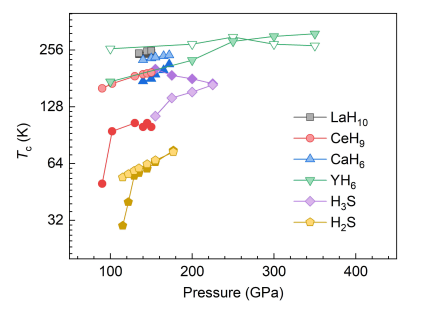
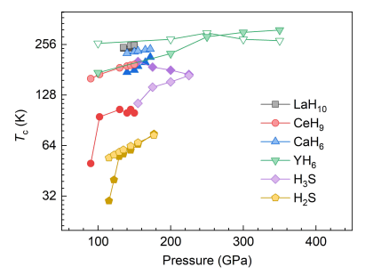
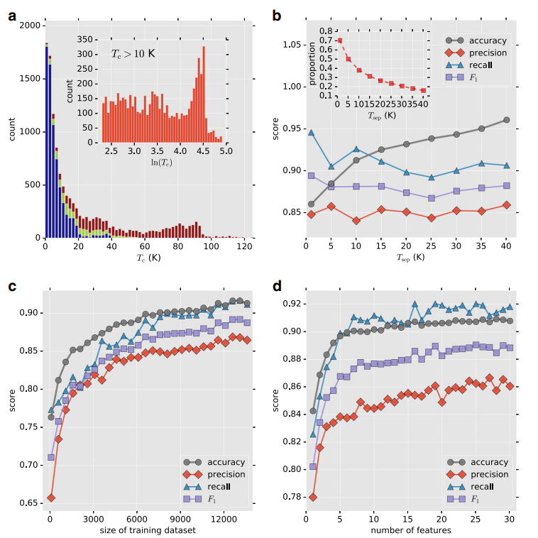
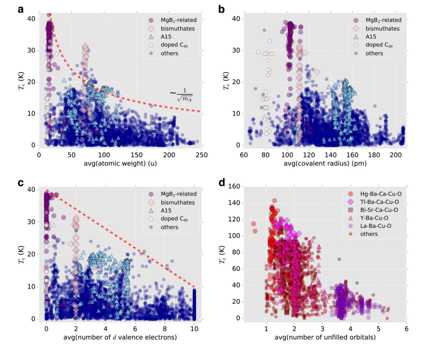
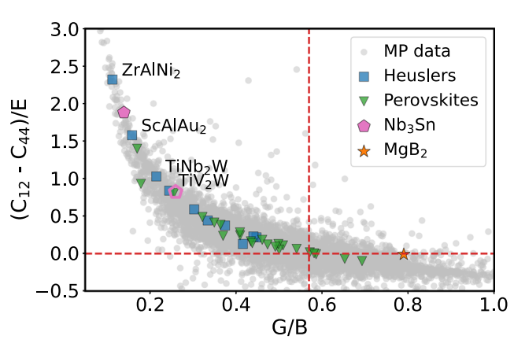
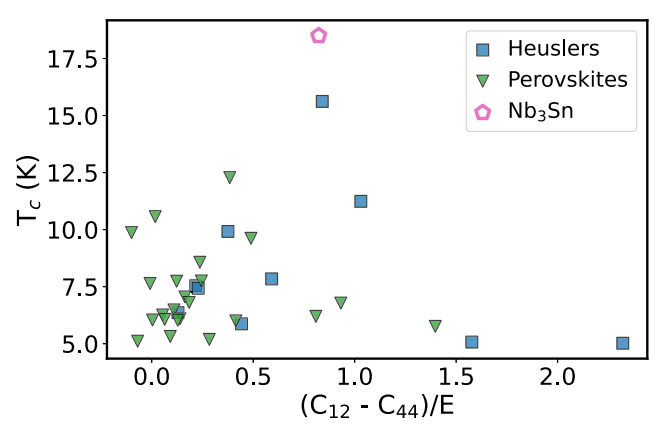
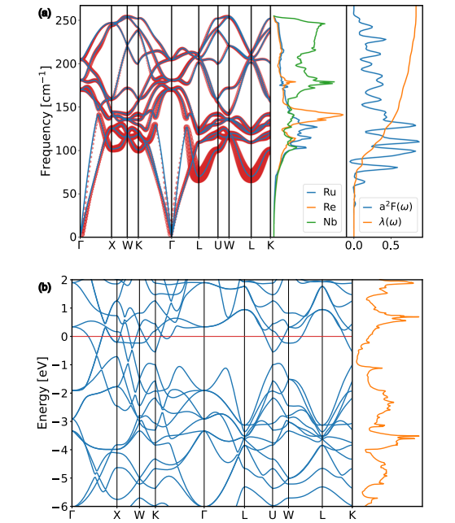
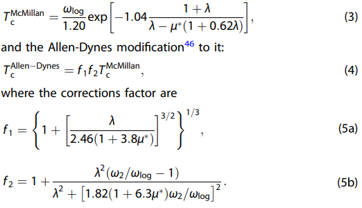

狙い
超伝導体は、特定の低温状態において電気抵抗が完全にゼロとなる材料です。この現象は、量子力学に基づいた現象であり、多くの産業に革新的な影響を与える潜在能力を持っています。超伝導体は以下のような、電気抵抗ゼロ、磁場を排除する（マイスナー効果）、量子的な現象に基づくなどの特徴を有します。
論文タイトル一覧
1. グラフニューラルネットワークによる超伝導体の構造と臨界温度の予測
・グラフニューラルネットワーク（GNN）は、グラフ構造を持つ物質の表現学習に有効な手法であるが、超伝導性に対するその表現能力や限界は十分に理解されていない。
・人気のあるGNNのバリアントであるグラフ畳み込みネットワーク（GCN）やGraphSAGEは、ある種の単純なグラフ構造を区別することができないことを示す。
・化学結合感度グラフニューラルネットワーク（BSGNN）という新しいアーキテクチャを提案し、これはGNNのクラスの中で最も表現力が高く、Weisfeiler-Lehmanグラフ同型性テストと同等の能力を持つことを証明する。
・BSGNNは、超伝導体の臨界温度（Tc）を予測するために訓練され、数々のグラフ分類ベンチマークで最先端の性能を達成する。
・BSGNNは、Tcが化学結合長や元素組み合わせに依存することを学習し、高Tc超伝導体に有利な要素や結合長を明らかにする。
・人気のあるGNNのバリアントであるグラフ畳み込みネットワーク（GCN）やGraphSAGEは、ある種の単純なグラフ構造を区別することができないことを示す。
・化学結合感度グラフニューラルネットワーク（BSGNN）という新しいアーキテクチャを提案し、これはGNNのクラスの中で最も表現力が高く、Weisfeiler-Lehmanグラフ同型性テストと同等の能力を持つことを証明する。
・BSGNNは、超伝導体の臨界温度（Tc）を予測するために訓練され、数々のグラフ分類ベンチマークで最先端の性能を達成する。
・BSGNNは、Tcが化学結合長や元素組み合わせに依存することを学習し、高Tc超伝導体に有利な要素や結合長を明らかにする。
コメント：相変化に溶融を必要としないとなると圧力/電気/熱的なマイグレーションでもっと容易に駆動させることができるようになるのだろうか。
補足：超伝導とは、物質が低温になると電気抵抗がゼロになる現象で、1911年にオランダの物理学者ヘイケ・カメルリング・オンネスによって発見された。超伝導は量子力学的な効果によって起こりますが、その機構は物質によって異なる。一般に、超伝導を示す物質は、電子がクーパー対と呼ばれる対を作って凝縮することで超伝導状態になる。クーパー対を作るためには、電子間に引力が必要ですが、その引力の起源は物質の種類や構造に依存する。従来の超伝導物質では、電子間の引力は結晶格子の振動（フォノン）が担っているが、1986年に銅酸化物高温超伝導体が発見されてからは、フォノン以外の引力源を持つ非従来型超伝導体が多く見つかっている。非従来型超伝導体では、電子相関と呼ばれる電子のクーロン力で互いに避け合う効果が重要な役割を果たしている。電子相関が強いと、通常の金属とは異なる性質を示すことがあり、例えば、反強磁性モット絶縁体という電気を通さない状態や、フェルミ液体では説明できない異常な電気伝導や熱伝導などが起こる。電子相関が強い物質では、電子のスピンや軌道などの自由度が重要となる。これらの自由度が相互作用することで、様々な秩序や揺らぎが生じ、これらの秩序や揺らぎがクーパー対形成の仲介役となる可能性がある。電子相関が強い非従来型超伝導体の代表例としては、銅酸化物高温超伝導体や鉄系超伝導体が挙げられる。これらの物質では、反強磁性的なスピン相関や軌道相関が超伝導の起源であると考えられている。
補足：超伝導とは、物質が低温になると電気抵抗がゼロになる現象で、1911年にオランダの物理学者ヘイケ・カメルリング・オンネスによって発見された。超伝導は量子力学的な効果によって起こりますが、その機構は物質によって異なる。一般に、超伝導を示す物質は、電子がクーパー対と呼ばれる対を作って凝縮することで超伝導状態になる。クーパー対を作るためには、電子間に引力が必要ですが、その引力の起源は物質の種類や構造に依存する。従来の超伝導物質では、電子間の引力は結晶格子の振動（フォノン）が担っているが、1986年に銅酸化物高温超伝導体が発見されてからは、フォノン以外の引力源を持つ非従来型超伝導体が多く見つかっている。非従来型超伝導体では、電子相関と呼ばれる電子のクーロン力で互いに避け合う効果が重要な役割を果たしている。電子相関が強いと、通常の金属とは異なる性質を示すことがあり、例えば、反強磁性モット絶縁体という電気を通さない状態や、フェルミ液体では説明できない異常な電気伝導や熱伝導などが起こる。電子相関が強い物質では、電子のスピンや軌道などの自由度が重要となる。これらの自由度が相互作用することで、様々な秩序や揺らぎが生じ、これらの秩序や揺らぎがクーパー対形成の仲介役となる可能性がある。電子相関が強い非従来型超伝導体の代表例としては、銅酸化物高温超伝導体や鉄系超伝導体が挙げられる。これらの物質では、反強磁性的なスピン相関や軌道相関が超伝導の起源であると考えられている。
DATE: 22 Aug 2023
Predicting Transition Temperature of Superconductors with Graph Neural Networks
Liang Gu et al. (University of Science and Technology Beijing, China)
arxiv.org: 2308.11160 (cond-mat.supr-con)
Predicting Transition Temperature of Superconductors with Graph Neural Networks
Liang Gu et al. (University of Science and Technology Beijing, China)
arxiv.org: 2308.11160 (cond-mat.supr-con)
 

2. 機械学習による超伝導臨界温度のモデリング
・この研究では、SuperConデータベースに収録された12,000以上の既知の超伝導体の臨界温度（Tc）をモデル化するために、いくつかの機械学習（ML）手法を開発した。
・素材はまず、Tcの値に基づいて2つのクラスに分けられ、Tcが報告されていない素材も含めて分類モデルが訓練された。このモデルは、化学組成から生成された粗い特徴だけを用いて、約92%の高い精度で予測した。
・次に、銅系、鉄系、低Tcの化合物に対して別々の回帰モデルが開発され、Tcの値を予測した。これらのモデルも良好な性能を示し、学習した予測因子は、異なる素材ファミリーにおける超伝導性のメカニズムに関する洞察を提供する可能性があった。
・さらに、AFLOWオンラインリポジトリから得られた結晶学的および電子的な情報を用いて、新たな特徴を追加し、モデルの精度と解釈可能性を向上させた。最後に、分類と回帰のモデルを統合したパイプラインを作成し、ICSDに収録された約11万種類の化合物から潜在的な新しい超伝導体を探索した。
・この探索により、20 K以上の予測Tcを持つ30種類以上の非銅系および非鉄系酸化物が候補として同定された。これらの素材の中には、銅系超伝導体と化学的および構造的な類似性を持つものや、フェルミ準位付近でフラットバンドを持つものがあり、MLモデルがデータ中の有意義なパターンを識別できることを示した。
・素材はまず、Tcの値に基づいて2つのクラスに分けられ、Tcが報告されていない素材も含めて分類モデルが訓練された。このモデルは、化学組成から生成された粗い特徴だけを用いて、約92%の高い精度で予測した。
・次に、銅系、鉄系、低Tcの化合物に対して別々の回帰モデルが開発され、Tcの値を予測した。これらのモデルも良好な性能を示し、学習した予測因子は、異なる素材ファミリーにおける超伝導性のメカニズムに関する洞察を提供する可能性があった。
・さらに、AFLOWオンラインリポジトリから得られた結晶学的および電子的な情報を用いて、新たな特徴を追加し、モデルの精度と解釈可能性を向上させた。最後に、分類と回帰のモデルを統合したパイプラインを作成し、ICSDに収録された約11万種類の化合物から潜在的な新しい超伝導体を探索した。
・この探索により、20 K以上の予測Tcを持つ30種類以上の非銅系および非鉄系酸化物が候補として同定された。これらの素材の中には、銅系超伝導体と化学的および構造的な類似性を持つものや、フェルミ準位付近でフラットバンドを持つものがあり、MLモデルがデータ中の有意義なパターンを識別できることを示した。
コメント：アメリカのマテインフォのハブ的役割を担っている研究グループの結構初期の超伝導予測に関する論文。2018年当初はかなり面白く前衛的な研究であったが、最近はこの手の研究も多く、5年で時代が大きく変化したと感じる。
補足：この論文では、機械学習アルゴリズムの中でも、教師あり学習と教師なし学習の両方を組み合わせた手法を使用しています。教師あり学習とは、既知の超伝導体の臨界温度（Tc）をラベルとして用いて、化学組成や結晶構造などの特徴からTcを予測するモデルを学習する手法です。教師なし学習とは、ラベルがないデータに対して、類似性やパターンを見つけるモデルを学習する手法です。この論文で使用された機械学習アルゴリズムの代表例は以下のとおりです。分類モデル：Tcの値に基づいて素材を2つのクラスに分けるモデル。この論文では、ロジスティック回帰1とサポートベクターマシン（SVM）2が使用された。回帰モデル：Tcの値を連続的に予測するモデル。この論文では、線形回帰3とサポートベクター回帰（SVR）4が使用された。クラスタリングモデル：ラベルがない素材に対して、類似性やパターンに基づいてグループに分けるモデル。この論文では、K平均法（k-means）5が使用された。
補足：この論文では、機械学習アルゴリズムの中でも、教師あり学習と教師なし学習の両方を組み合わせた手法を使用しています。教師あり学習とは、既知の超伝導体の臨界温度（Tc）をラベルとして用いて、化学組成や結晶構造などの特徴からTcを予測するモデルを学習する手法です。教師なし学習とは、ラベルがないデータに対して、類似性やパターンを見つけるモデルを学習する手法です。この論文で使用された機械学習アルゴリズムの代表例は以下のとおりです。分類モデル：Tcの値に基づいて素材を2つのクラスに分けるモデル。この論文では、ロジスティック回帰1とサポートベクターマシン（SVM）2が使用された。回帰モデル：Tcの値を連続的に予測するモデル。この論文では、線形回帰3とサポートベクター回帰（SVR）4が使用された。クラスタリングモデル：ラベルがない素材に対して、類似性やパターンに基づいてグループに分けるモデル。この論文では、K平均法（k-means）5が使用された。
18 Jun 2018
Machine learning modeling of superconducting critical temperature
Valentin Stanev et al. (University of Maryland, USA)
npj Computational Materials (2018) 29
Machine learning modeling of superconducting critical temperature
Valentin Stanev et al. (University of Maryland, USA)
npj Computational Materials (2018) 29


3. 延性超伝導ホイスラーX2YZ化合物の探索
ホイスラー化合物の超伝導性と弾性特性について、第一原理計算と機械学習モデルを用いて広範な研究を行った。ホイスラー化合物と反ペロブスカイト化合物を比較し、超伝導性に関する一般的な振る舞いと材料固有の特徴を見出した。超伝導転移温度が5K以上の22種類のホイスラー化合物を発見し、その中には10K以上の8種類も含まれていた。これらは現在のホイスラー化合物の最高記録である4.7 Kを大きく上回っている。これらの化合物はほとんどが延性であり、高磁場発生用のワイヤーやテープの製造に有望な候補であることが示された。機械学習モデルはデータの解釈や探索に有用であり、超伝導性に関するデータセットを拡大することで、より一般的で正確な機械学習アプリケーションが可能になることが期待される。
コメント：多彩な機能を示すホイスラー合金における超伝導と弾性定数の関係。興味深い視点が沢山書かれており参考になった。
用語：ホイスラー化合物：X2YZという組成を持ち、立方晶系に結晶化する金属間化合物の一種である。XとYは遷移金属、Zは主族元素である。多様な組成と調整可能な材料特性を持ち、熱伝導性、熱電効果、トポロジカル絶縁体、磁性などの分野で研究されている。エリアシュバーグ理論：超伝導性において、電子間の引力相互作用を提供する声子の役割を記述する理論である。声子ダイナミクスを考慮に入れることで、電子に対する遅延効果が現れる。周波数依存性の電子自己エネルギーの形で表される。 方法論：第一原理計算：電子構造やフォノン分散曲線を計算するために、密度汎関数理論を用いた第一原理計算を行った。QUANTUM ESPRESSOという計算ソフトウェアとPSEUDODOJOという擬ポテンシャルデータベースを使用した。超伝導転移温度は、マクミランの公式やエリアシュバーグ方程式などを用いて求めた。機械学習モデル：安定性の範囲を広げるために、機械学習モデルを用いて高速に組成空間をスクリーニングした。シンボリック回帰とランダムフォレストという二種類のモデルを使用した。これらのモデルは、小さなデータセットでも高い精度を持ち、学習したモデルの解釈性も提供する。弾性定数と延性：超伝導転移温度が5K以上の化合物について、有限差分法により弾性定数テンソルを計算した。これらの値から、プーの基準やペティフォアの基準などを用いて延性/脆性の分類を行った。ほとんどの化合物が延性であることが示された。
用語：ホイスラー化合物：X2YZという組成を持ち、立方晶系に結晶化する金属間化合物の一種である。XとYは遷移金属、Zは主族元素である。多様な組成と調整可能な材料特性を持ち、熱伝導性、熱電効果、トポロジカル絶縁体、磁性などの分野で研究されている。エリアシュバーグ理論：超伝導性において、電子間の引力相互作用を提供する声子の役割を記述する理論である。声子ダイナミクスを考慮に入れることで、電子に対する遅延効果が現れる。周波数依存性の電子自己エネルギーの形で表される。 方法論：第一原理計算：電子構造やフォノン分散曲線を計算するために、密度汎関数理論を用いた第一原理計算を行った。QUANTUM ESPRESSOという計算ソフトウェアとPSEUDODOJOという擬ポテンシャルデータベースを使用した。超伝導転移温度は、マクミランの公式やエリアシュバーグ方程式などを用いて求めた。機械学習モデル：安定性の範囲を広げるために、機械学習モデルを用いて高速に組成空間をスクリーニングした。シンボリック回帰とランダムフォレストという二種類のモデルを使用した。これらのモデルは、小さなデータセットでも高い精度を持ち、学習したモデルの解釈性も提供する。弾性定数と延性：超伝導転移温度が5K以上の化合物について、有限差分法により弾性定数テンソルを計算した。これらの値から、プーの基準やペティフォアの基準などを用いて延性/脆性の分類を行った。ほとんどの化合物が延性であることが示された。
09 Sep 2023
Searching for ductile superconducting Heusler X2YZ compounds
Noah Hoffmann et al. (k, Martin-Luther-Universität Halle-Wittenberg, Germany)
npj Computational Materials 9, 138 (2023)
Searching for ductile superconducting Heusler X2YZ compounds
Noah Hoffmann et al. (k, Martin-Luther-Universität Halle-Wittenberg, Germany)
npj Computational Materials 9, 138 (2023)



